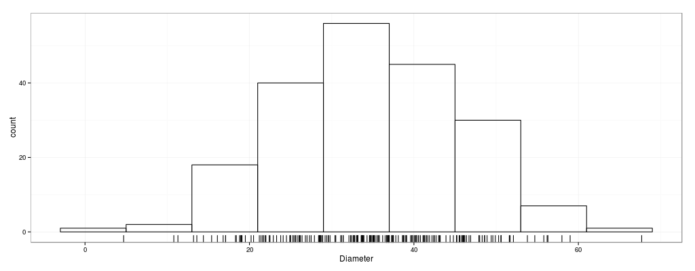
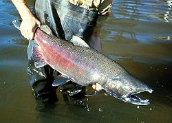
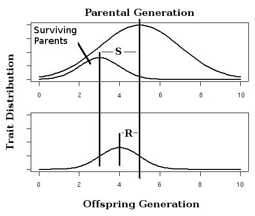
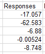

Introduction
Arrays and matrices are closely related terms. Arrays are computer data structures that store data in rows and columns. Matrices are mathematical structures made up of rows and columns. Mathematicians and computer scientists may be able to tell you how they are different, but we will use the terms interchangeably in here.
Array formulas in Excel work on arrays of data. They can return a single cell or an array of cells, but they all take a range of cells as input and give one or more cells as output. We indicate that a formula is an array formula by using CTRL+SHIFT+ENTER to enter the formula, which prompts Excel to execute operations on each of the input cells.
There are three kinds of applications of array formulas we will learn today:
1. Spreadsheet formulas and functions that only work correctly as array formulas
2. Formulas that can be either array formulas or standard cell formulas, but are more compact and efficient when used as array formulas
3. Matrix math
Download this file and save it to the folder H:/biol365/ex5_arrays
Frequency function
Our first example of a formula that must be an array formula to work is frequency(). A very important step in analyzing data is to assess the distribution of the data so that we can pick the right analysis procedures for it. For a continuous variable we can't just count repeated data values, because there may not be any. Instead, we need to break up continuous numbers into bins, then count the number of data values in each bin. As an example, we will be working with data on diameters of trees, which are distributed like this:
Individual data values are shown as hash marks below the histogram. You can see that it's really difficult to tell from the individual data points alone that there is a concentration of data values in the middle, with diameters becoming less common at increasingly large or small values. But, if you break up the x-axis into sections, called bins, you can count up how many trees' diameters fall into each bin - this clearly shows that the diameter measures follow a typical, bell-shaped distribution.
Excel just added support for histograms with Excel 2016, but we are going to learn how to do them the old fashioned way because it will give us a chance to learn how to use the frequency() array formula (and because Excel 2016's histograms use appallingly bad x-axis labels, and we can do better).
The frequency() array formula is useful for calculating frequencies of data values within bins that we specify. The bins don't have to be evenly spaced, but we will use bins of equal size here.
A. Open the spreadsheet, and switch to sheet "Frequency". You'll see a column of 200 tree diameters.
B. Create bins of tree diameter. In cell D1, type "Bins". This is where you will define the ranges of diameter within which you'll count frequencies of occurrence. The bins aren't created automatically, so you'll need to create your own.
First we need to decide how many bins to use. There are various ways of
calculating an appropriate number, but a simple one is Sturges' rule,
which sets the number of bins as log2(n) + 1, rounded to the nearest
whole number. By this criterion, we would want log2(200) + 1 = 8.64
bins, which rounds to 9.
The next step is to decide what the upper and lower limits of the bins
should be. Start by finding the minimum and maximum values; in cell g1
"Minimum", and in h1 type =min(a2:a201).
This will give you the minimum data value. In cell g2 type "Maximum",
and in h2 type =max(a2:a201), which will
give you the maximum. The width of the bins is the difference between
the maximum and minimum divided by the number of bins. We're going to
define the first bin when we pick a starting point in the next step, so
we'll divide the range (max - min) by 8 in order to end up with 9 bins
total. In g3 type "Bin width", and in h3 type =round(
(h2-h1)/8, 0). This gives you the width of each bin to the
nearest whole number.
The number entered in the row for a bin is the upper limit of the bin. The lower end of the bin is determined by the value in the cell in the previous row. For the first row, there won't be a previous row, so it will count the number of observations from the upper limit you enter to negative infinity.
In cell d2 type in the nearest whole number larger than the minimum (so, if the minimum was 4.3, type 5 in d2). Then, in d3 type =d2+h$3 which will calculate the next bin by taking the previous one and adding the bin width in cell h3. Finally, copy d3 and paste it into the next seven cells below. This should give you nine bins, with the upper bin having a value of 69, just above the maximum you calculated in h2.
C. Now everything is set up, so you can calculate the frequencies. The structure of the frequency() command is: frequency(data array, bins array). The "data array" argument is the range of cells that holds the data, and "bins array" are the bins to use to calculate frequencies. In cell e1 type "Frequency". Now, select cells e2 through e10, which should include all of the cells adjacent to your bins. You'll see that the first cell stays active, while the rest are selected but are darkened. Type =frequency(a2:a201, d2:d10), and hit CTRL+SHIFT+ENTER. You should now see frequencies next to each bin.
D. To make a histogram, you first need to calculate the midpoints for the bins. The numbers in the "bins" column are all the upper limit of the bins, but Excel will want to put the labels for the bars on the graph you will make in the middle of the bar instead of at the upper limit. The midpoints are 1/2 of the bin width below the upper limit.
Enter "Midpoints" into cell c1, and in cell c2 enter =d2-h$3/2. Copy and paste this to the seven rows below, and you now have midpoints for every bin.
Make a bar chart for the frequencies, and use the midpoints as the x-axis labels.
- Select the frequencies in E and insert a column chart (the "clustered column" type is fine, there is only one column of data so you will get a simple column chart from this).
- Select the bars, right-click and select "Select data...". Click on the "Edit" button in the "Horizontal (Category) Axis Labels" and select the midpoints - you'll see that the labels are now the midpoints from column C below each bar.
- Right-click the bars again and select "Format data series...". Set both the series overlap and gap width to 0.
You now have a histogram with labels that indicate the middle of the bin. You can add an x-axis title of "Diameter", and a y-axis title of "Frequency", and the graph is complete.
Array formulas for summarizing grouped data
A spreadsheet is easier to read and understand when you only display the things that are needed to interpret the data. For example, a sheet that shows columns full of intermediate steps in a complex calculation is difficult to understand, because only the final step of the calculation is meant to be interpreted. Array formulas can greatly increase the clarity and interpretability of a spreadsheet by allowing you to do complex calculations in a single cell, so that only the result of the calculation is displayed.
To illustrate use of array formulas, we will calculate a mean and standard deviation from grouped data on numbers of aphids on a sample of 100 tomato leaves from a garden.
A. Switch to sheet "Grouped data". You'll see that you have a column of data called "Number of aphids" and one called "Frequency" giving the number of times that each number of aphids was counted out of 100 plants.
B. In cell A14 write "Mean". In cell B14 type =sum(a2:a12*b2:b12)/sum(b2:b12) and hit CTRL+SHIFT+ENTER. You now have an array formula giving the mean for the data.
Why does this work? The a2:a12*b2:b12 argument in the numerator multiplies each number of aphids by its frequency, and then the sum() function sums the products - this gives us the sum of the number of aphids observed across all the leaves, which is the numerator of an arithmetic mean. The sum of the frequencies in the denominator is just the number of leaves counted, which is the denominator for an arithmetic mean.
C. We're going to do the standard deviation now.
Before we move on to the calculation, though, a quick caution about complex formulas. If you recall from last week, we avoided having cells with intermediate steps of calculation in our spreadsheet by nesting calculations within a single cell formula, and array formulas allow us to take this approach to the next level. However, as we learned about nested formulas last week, it is harder to check for errors when you're hiding calculations within a complex cell formula. You should be especially vigilant about double-checking your results if you use array formulas - the potential for errors increases as formulas become more complex, and array formulas allow you to build very complex calculations.
We will address this issue in our calculation of the standard deviation by doing the calculation two ways - once without using array formulas at all, in small steps that are easy to error check, and then when we're confident we got it right, we will do the calculation again with an array formula that does the entire calculation in a single cell.
First we'll work on the numerator of a standard deviation, the "sum of squares". In cell C1 type "Squared differences", and in cell C2 type =(a2 - b$14)^2. This is the squared difference between 0 aphids and the mean of 2.38. Since you used a dollar sign in front of the row reference for the mean, you can copy and paste this formula to the rest of the rows (through C12).
Next, in cell D1 type "Diffs x Freqs". In cell D2 type =b2*c2. Since there were 10 times that 0 aphids were observed, the squared difference in cell C2 should also be counted 10 times - multiplying C2 by B2 accomplishes this. Copy cell D2 and paste to the rest of the rows (through D12).
Now, in cell A15 type "SD". In cell B15 we are going to sum the diffs x freqs, divide by the sample size minus 1 (the degrees of freedom), and then take the square root to get our standard deviation. In cell B15 type =sqrt(sum(d2:d12)/(sum(b2:b12)-1)). This is not an array formula, because there is no per-cell operation being done. The denominator sums the frequencies, which gives us the sample size, and then subtracts 1 to give us degrees of freedom. The square root of the sums of squares divided by the degrees of freedom is the standard deviation.
D. Now that we're confident we know what the correct value is, we can do all these calculations in a single cell, using an array formula.
In cell A16 type "SD, one cell". In cell B16 type the formula "=sqrt(sum(b2:b12*(a2:a12 - b14)^2)/(sum(b2:b12)-1))" and hit CTRL+SHIFT+ENTER. You should see the same value reported as in cell B15. If you look at this formula, the part that calculates the squared differences is in red - an array formula is needed to do this step, because the mean in b14 is subtracted from each cell in a2:a12, and each difference is then squared. These squared differences are then multiplied by their corresponding frequencies, in dark blue - this multiplication step also requires an array formula, because the frequency in b2 is multiplied by the squared difference for a2, then the frequency in b3 is multiplied by the squared difference for a3, and so on. The sum of squares is calculated as the sum of squared diffs x freqs, indicated in purple. The degrees of freedom are calculated by summing the frequencies in b2 through b12, and then subtracting one, in orange. The slash in the middle divides the sum of squares by the degrees of freedom, and then the sqrt() function takes the square root of the result, in green.
The advantage of this complicated formula is that you wouldn't need the "squared differences" or "Diffs x freqs" columns, which are just cluttering up the worksheet - they aren't meant to be interpreted, they are just steps in the calculation of the standard deviation. If you were doing this calculation for your own data analysis project, you could delete those columns and the sd calculation in row 15, and just retain the sd calculation in cell B16, once you know it's right - don't do that, though, because I want to see both of your calculations.
Responses to selection on genetically correlated traits
Size-selective harvesting refers to the practice of preferentially taking a particular size of a harvested species. This image of a Chinook salmon on the left is an example of a species that is harvested in this way - commercial harvesting focuses on the largest individuals because they are the most profitable, and sport fishing regulations have minimum sizes to keep a fish that you catch (not to mention that anglers prefer to catch the biggest ones).
Since salmon are a biological organism, we can expect that if the way we harvest makes it dangerous for them to be large they will evolve smaller size.
Size is a phenotypic trait - the way the organism looks or functions. The size of a salmon is affected both by its genes, and by environmental factors. To some degree, big parents are big because their genes make them big, and they will be able to pass those genes on to their offspring, which will make their offspring big as well. But, environmental influences that act on a salmon as it grows (such as the water temperatures, how well fed they were, etc.) can't be passed on from parents to offspring. To understand how size-selective harvesting would affect the size of salmon we will need to know how heritable the trait is - that is, how well a parent's body size predicts its offspring's body sizes. We will use a measure called heritability, symbolized h2, to represent this part of the process.
The other thing we will need to know is how selective the harvesting is. If every single one of the largest individuals are removed from the population before they breed then only smaller individuals will be left to breed, and you can expect a large change in size in the offspring generation. If some of the biggest individuals are taken but many still remain, the amount of change in the next generation will be smaller. The difference in average size of adults before harvest and after harvest is called the selection differential. We will represent the selection differential with the letter s.
This illustration shows how heritability and selection differentials produce change in size over time. The top panel shows the parental population before size-selective harvesting (the big curve, with a mean at 5), and the population of parents after size-selective harvesting (the smaller curve, with a mean at 3). The difference between the means before and after harvest is s.
What we actually want to know is how much change in size to expect from one generation to the next - that is, we want to know the response to selection. The bottom panel shows the offspring generation that would be produced by the surviving parents. The mean for the offspring is at 4 - this is neither at the pre-harvest parental mean (5) or the after-harvest mean (3), it is right in between. This happens because some of the smaller salmon in the parental population carried genes for larger body size, but environmental effects prevented them from achieving a large size - the environmental effects are not heritable, so the next generation falls between the pre-harvest and post-harvest means. The amount of change from the pre-harvest mean to the offspring mean is the response to selection, R.
The equation that predicts the response to selection based on the size of the selection differential and the heritability of the trait is called the "breeder's formula", which is:
R = h2S
That is, the amount of change we can expect in the average trait value from one generation to the next (R) is equal to the heritability (h2) multiplied by the selection differential (S).
The breeder's formula works well for one trait at a time, but organisms are integrated units, not collections of independent traits. When you select on body weight, you end up changing all sorts of other traits as well. Fishers may not care what the growth rate of the salmon they catch was, and may not directly target fish based on whether they grow rapidly or slowly, but the size of the fish may be related to how rapidly they grow, and selecting on size may indirectly affect the growth rate as well. The selective pressure put on traits due to their correlation with a trait that is directly under selection is called indirect selection.
To understand indirect selection, we need to use keep track of several traits at once, and account for the correlations between them.
If you switch to the "Matrix" tab you'll see an example of a variance-covariance (G) matrix that comes from a study by Hard (2004). Variance-covariance matrices are organized like a correlation matrix, which you may have seen before - the row labels and column labels are the same, and the body of the matrix holds variances when the row and column labels match, and holds covariances between two variables when the row and column labels are different. Since the row and column labels match in a diagonal from the upper left to the lower right corner of the matrix, this is called the main diagonal of the matrix. The main diagonal is made up of genetic variances, which are equivalent to the heritabilities in the breeder's formula.
The numbers above the main diagonal are the upper triangle, those below the main diagonal are the lower triangle, and if you compare them the upper and lower triangles are mirror images of one another - since the row and column labels are the same, they pair up once when one variable is in the row and one is in the column, and again when the first variable is in the column and the second is in the row.
Covariances are like correlations that haven't been standardized - they indicate how two variables change relative to one another, but they still have the original data units. It's harder to compare covariances to one another because different pairs of variables have different units, but you should be able to see that all of the covariances in the G matrix are positive - this means that in every case as one variable increases so does the other (and, as one decreases the other decreases too).
When we work with covariances we need a different form of selection differential - we use selection gradients instead. Selection gradients relate relative fitness to the trait value, which we need to convert the variances and covariances into units of average change in traits. We enter one gradient for each trait, and if the gradient is positive we are selecting for the trait value to increase, and if it's negative the trait value is selected to decrease. The gradients are scaled so that the responses to selection indicate the amount of change in mean to expect after one generation of selection.
Now that you know the basic setup, let's think about what this model will tell us about the effects of size-selective harvesting in salmon. Fishing selects against large fish, in that they are removed from the population before they can breed - to represent this, we will enter a negative gradient for the adult weight trait. This will, obviously cause adult weight to decline, but since weight is correlated with every other trait in this matrix we expect all of the other traits to change as well due to indirect selection. Additionally, the amount of change in weight we would expect is a combination of the direct selection against large size and the indirect effects of selection for or against the other traits. Depending on the gradients assigned to the other traits the change in weight could either be accelerated (if the gradients are all in the same direction), or slowed (if the gradients are in different directions).
The way we will predict how direct and indirect selection produce change is to use a version of the breeder's formula designed for multiple correlated traits, which tells us:
R = Gβ
We will use this model to explore how these traits are expected to change as different patterns of selection are applied to them.
A. First, we need to set up the model. In cell H3 enter the label "Gradients". Initially we will only apply selection to the weight of the adults, and will leave the selection gradients at 0 for all the other traits - enter a 0 for adult age (H4), fork length (H5), spawn date (H7), and growth rate (H8), and enter a -0.01 for adult weight (H6).
Enter "Responses" into cell J3. To calculate the responses to a generation of selection against adult weight, we need to matrix multiply the G matrix by the gradients. Matrix multiplication is an array operation in Excel, but we need to set it up correctly for it to work. We need to select the range of cells that will hold the matrix of responses, and in matrix multiplication the product will have the number of rows of the left matrix, and the number of columns of the right matrix - there are five rows in G, and one column in S, so R will have five rows and one column. Select cells J4 through J8.
Once you have the output range selected, type the formula =mmult(b4:f8,h4:h8), and then use CTRL+SHIFT+ENTER to enter this as an array formula - if all went well you now have five responses, one for each trait, like this.
{kind=link}
You can already see that there are changes in all of the traits because of indirect selection on them via their correlation with weight.
We have a problem, though - the responses are all giving expected amounts of change in the trait, but all of the trait values have different units, and we don't know what the baseline starting point is for any of them. We can set all of these changes to be proportional changes by dividing each one by the mean trait value, properly transformed, but the publication that the G-matrix came from did not provide that information. We will use some ballpark estimates for each of the mean trait values so that we can compare them, but bear in mind that these numbers are very rough estimates.
In cell K3 enter "Means (untransformed)", and enter:
3 for adult age (K4)
1092 for fork length (K5)
13600 for adult weight (K6)
318 for spawn date (K7, this is the number of days elapsed since the first of the year, and Chinook spawn in the fall)
62 for growth rate (K8)
Now, we need to express these on the same scale as they appear in the G matrix - in cell L3 enter "Means (transformed)", and then enter:
=k4^3 in cell L4
=k5 in cell L5 (no transformation needed)
=sqrt(k6) in cell L6
=ln(k7) in cell L7
=k8 in cell L8 (no transformation needed)
Finally, you need to divide the responses by these transformed means to get a percent change per generation. Do this in column M - use the label "Percent change", and divide the responses from J by the transformed averages in L, and then set the cells in M to a "Percentage" display type.
Before moving on to the next set of selection gradient values, copy the proportional changes from M4:M8 and paste-special as values in cells B12:B16 (you just need to select B12 and paste-special). In B11 enter the label "Weight-" to indicate that these are the proportional responses when you select against weight.
B. The first scenario in step A imagined that fishing only exerted direct pressure on one trait, weight of adults, but in fact it exerts pressure on other traits as well. For example, growing rapidly so that you can breed before you get caught may be beneficial in a harvested population, and although fishing doesn't specifically target the slow-growing fish, there is still a direct benefit to rapid growth.
To simulate this process, enter a value of 0.01 into the gradient for spawn date - this is a positive selection gradient, which means we're selecting for faster growth, in addition to still selecting against larger size.
Copy the proportional changes from column M into
cells C12:C16 as values, and label them "Weight-, growth+".
C. By the same argument, we might expect that breeding younger would be beneficial. Salmon migrate out to sea, spend 2-4 years growing, and then return to spawn. Although a salmon can only choose to spawn at 2 years, 3 years, or 4 years, the average age can decrease or increase by fractional amounts, depending on how many animals of each age are spawning in a year.
To select for younger breeding, we will negatively select against older breeding (adult age). Enter a value of -0.01 as the gradient for adult age. Copy and paste the proportional changes as values to column E next to the other responses, and label them "Weight-, growth+, age-".
D. We are now going to graph the results. Copy all of the trait labels from A4 to A8, and paste them next to the responses (cells A12 to A16). Set their display type to percentage. Add the label "Trait" to cell A11.
Then, select the range of cells that has the trait names, the responses, and the column headings (A11 to D16) and insert a line graph.
The graph has some issues we need to fix, the first of which is that the traits are on the x-axis, and the series are the different selection gradients we used. We want the opposite - the gradients should be on the x-axis, and each line should be a trait. To swap them, select any one of the lines, right-click, and select "Select data".
In the "Select Data Source" window that pops up, click "Switch Row/Column", and click "OK". You now have a different line for each trait, and you can more easily see how changing the selection gradients affect them.
Next, since we have both positive and negative changes setting the x-axis to intersect the y-axis at the origin is putting the labels in the middle of the graph. We would like them at the bottom where they belong. This is done, a little counter-intuitively, by changing a y-axis setting - select the y-axis by clicking on any of the axis labels. Switch to the axis options (click on the little histogram icon on the right side at the top of the window), and find the "Horizontal axis crosses" settings. Click on "Axis value" and set it to the smallest number on the y-axis in the graph, which is -0.15. You will now have the labels for the selection gradients at the bottom of the graph.
You can change the chart title to "Responses to selection", and add a y-axis label of "Proportional response".
E. Now that you have the results, notice a few interesting patterns:
- Selecting against heavier animals alone caused at least a little change in every trait. Traits that either have very little heritable variation, or that aren't strongly genetically correlated with weight (spawn date) change the least.
- When there is positive selection on one trait and negative selection on another the responses will offset one another to a degree - note that the amount of decline in weight expected went down a little when growth rate was positively selected.
- Indirect selection can overwhelm direct selection - when negative selection was applied to both weigh and age, the expected response for growth rate became negative again, even though there is still a selective advantage for rapid growth.
Assignment
That's it! Upload your completed worksheet to the class web site.